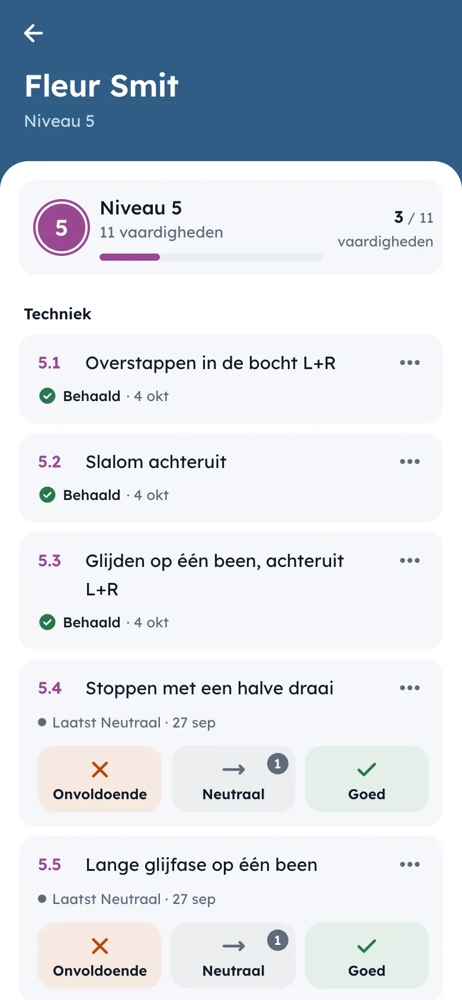
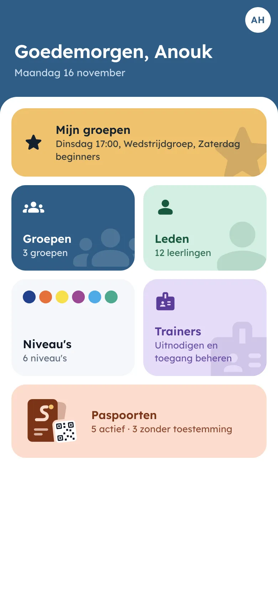
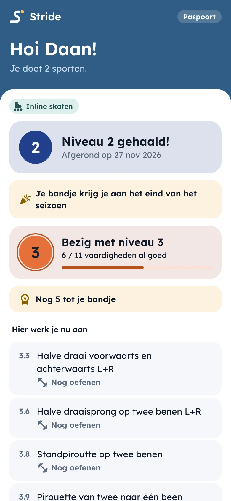
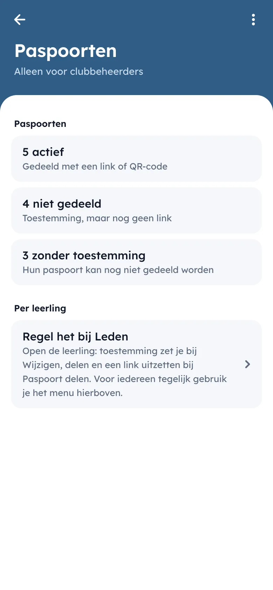

In 24 seconden
Zo werkt Stride
Een trainer beoordeelt drie leerlingen tijdens de les, deelt daarna het paspoort, en de leerling ziet op de eigen telefoon wat al goed gaat.
Tijdens de les
Beoordelen in één tik
Trainers kiezen een vaardigheid en zien de hele groep onder elkaar. Per leerling tikken ze onvoldoende, neutraal of goed aan. De beoordeling wordt direct opgeslagen en is eenvoudig te herstellen. Een leerling afzonderlijk beoordelen kan ook.
Stride werkt in de browser van de telefoon, installeren is niet nodig. De knoppen zijn met één hand te bedienen, langs de kant of aan de badrand.



Niveaus en voortgang
De voortgang hoort bij de leerling
De niveaus en vaardigheden bepaalt iedere club zelf, net als wanneer een niveau behaald is. Hoort er een diploma, bandje of insigne bij, dan registreert de trainer ook de uitreiking. Wisselt een leerling van groep of trainer, dan gaat de voortgang mee.
Trainers loggen in met hun e-mailadres en een code, zonder wachtwoord. Beheerders nodigen trainers uit en bepalen wie wat mag. Zo werkt inloggen.


Voor leerlingen
Een paspoort om mee te kijken
Via een persoonlijk paspoort zien leerlingen op hun eigen telefoon aan welk niveau ze werken en welke vaardigheden al goed gaan. Een account is niet nodig. Het paspoort toont geen cijfers en alleen de voornaam van de leerling.
Delen kan pas als een beheerder heeft vastgelegd dat er toestemming is. Daarna deelt de trainer het paspoort op een moment dat past, via een QR-code of een link. Een link is altijd te vervangen of uit te zetten.



In gebruik
Ontstaan op het ijs
DIJC
Kunstschaatsen
Stride is ontstaan bij kunstschaatsclub DIJC, waar de trainers er wekelijks mee werken onder de naam IJsvrij. Iedere club krijgt een eigen adres en eigen niveaus. Zo past Stride bij elke sport die met niveaus werkt, van zwemles tot turnen of judo.
Past Stride bij jouw club?
Stuur ons een mail over je club en hoe jullie nu met niveaus werken. We laten graag zien hoe Stride werkt.
Mail ons